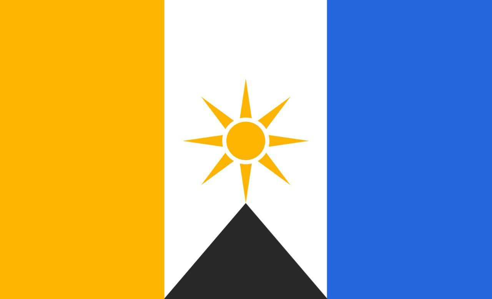

Про Яружну
Яружная - це нова, перспективна та прекрасна країна, що знаходиться в самому серці так званої "України".
Нехважаючи на новітність нашої держави на світовій арені, її історія бере своє коріння ще в далекому минулому.
Навіть сам Володимир Володимирович в своєму останньому інтерв'ю не заглиблюапася в такі безодні історії.
Наша могутня держава вже була визнана такими великими гравцями, як Росія, Україна та Гіперборея.
Зараз ми переживаємо важкі часи - кожен день наша країна потерпає від бомжів нацистів.
Тому, саме в такі часи ми розраховуємо на підтримку світу та намагаємося отримати визнання від інших держав.
Туризм
Яружна ще невідома світу держава. І це насправді через те, що вона прихована. З цієї причини на Яружній мало туристів,
але при цьому, через свою скритність, Яружная не приймає участі в зовнішніх конфліктах. Але це все не означає, що вона непригодна для туризму.
Дерева на Яружній настільки старі та високі, що за ними навіть не видно будівель. Справжнє село, приховане в листі. Фанати Наруто можуть відчути, ніби потрапили в Коноху.
Звичайні люди ж можуть насолодитися атмосферою давнини. Останні технології Яружної датуються 3000 роком до н. е.
Культура
Культура Яружної дуже незвична та незрозуміла звичайній людині. Наша держава так довго знаходилась в ізоляції, що отримала свої унікальні традиції та навіть свої вірування.
Офіційна мова Яружної - суржик. На сайті, так як й у всій державі проводяться роботи по переходу на суржик.
Уряд
Хоча формально уряд Яружної вказаний як Республіка, технічно, урядом є Анрахо-Привітивізм.
Правителем Яружної є гетьман, але рішення приймаються усім кабінетом міністрів, який складається з п'яти людей, включаючи Папу Яружного, міністра цифровізації та ін.
Яружная зараз проходить стадію реформації, що зробить її структурованою та патужною.
Контакт
Якщо ви зацікавлені у нашій державі, пройдіть спеціальний обряд, щоб отримати громадянство.